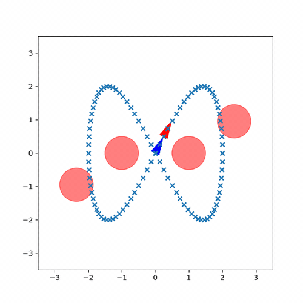
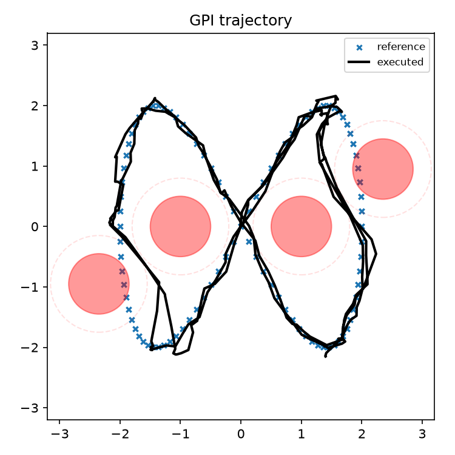
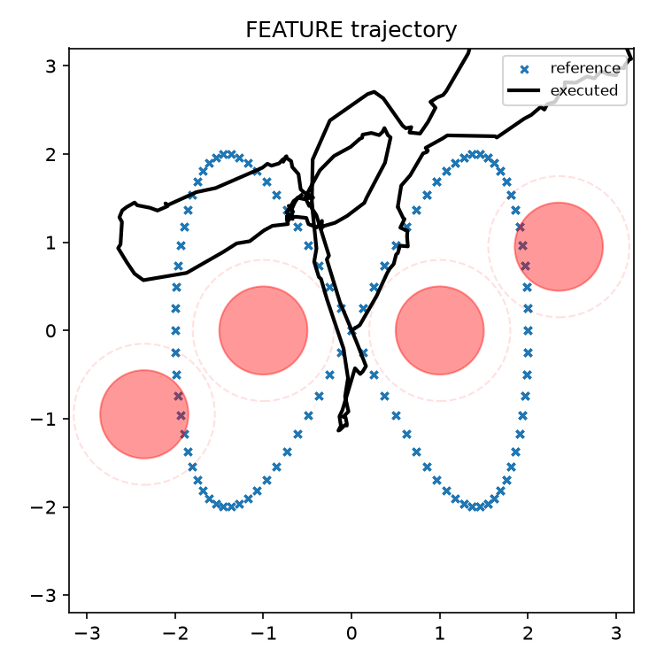
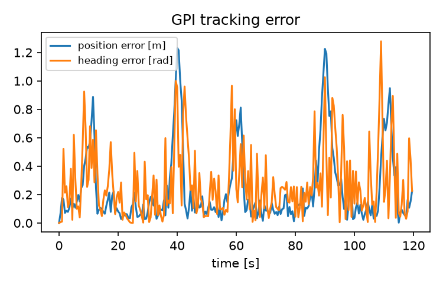

ECE 276B · ROBOT CONTROL
Robot Trajectory Tracking under Uncertainty
Compare three controllers as a noisy differential-drive robot follows a figure-eight route around obstacles.

The project
I implemented certainty-equivalent control, tabular generalized policy iteration, and a feature-based policy approximation, then compared their tracking and safety behavior in simulation.
How it works
- CEC repeatedly solves a nonlinear optimization problem as the robot moves.
- Tabular GPI computes a discretized policy for fast lookup during a run.
- Feature-based GPI fits a compact value approximation and changes the tracking-versus-safety trade-off.
See the evidence
The animation shows one run unfolding over time. The results below compare the controllers and their tracking error.



How to read this work
These plots describe simulated behavior. They do not establish reliable collision avoidance.